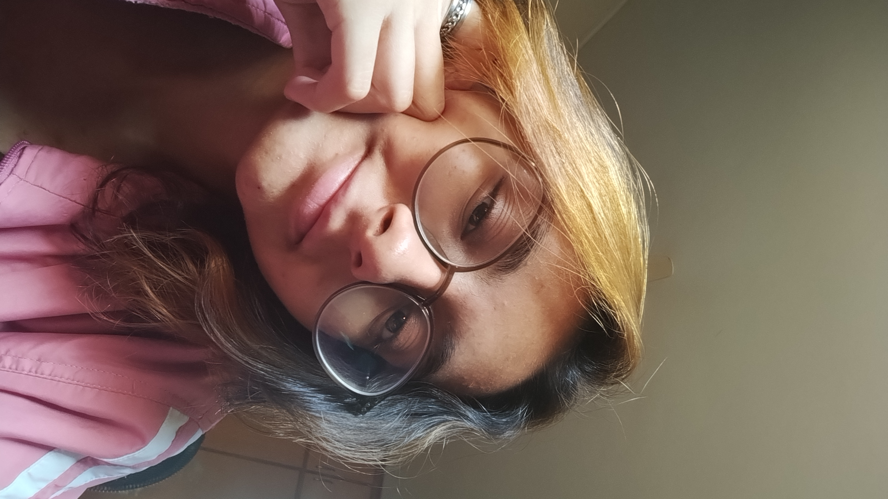

Jhana - Dev & Designer (2026)
A Arquiteta por trás do código
Recém-formada pela ETEC (2025), não busco atalhos. No meu TCC GoLand, codifiquei 90% da plataforma, unindo Django, HTML e Figma.
Hoje, mergulho em Growth Design e CRO. Acredito que o futuro do digital está na união entre dados, estética e código.
Transformo ansiedade em critério e sigo construindo degrau por degrau. Busco oportunidades em Marketing Digital e Web Dev onde a curiosidade e a disciplina sejam o motor.